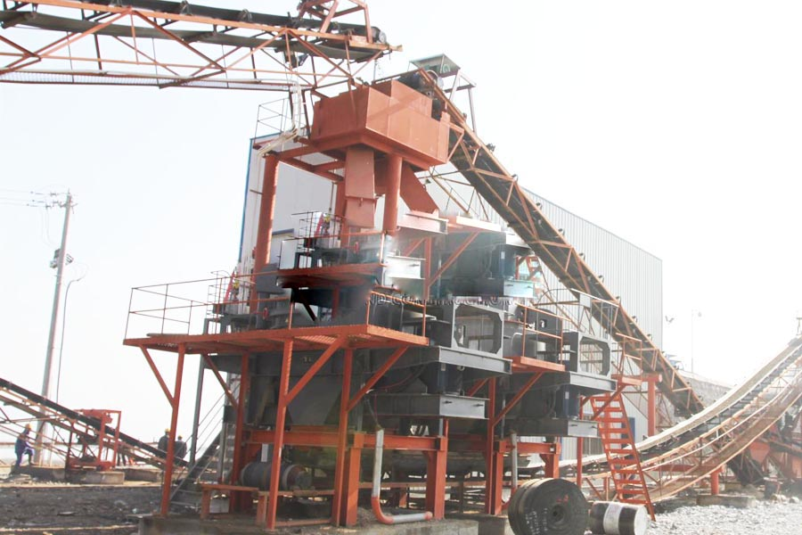

Construction waste crushing production line

Mobile construction waste crushing station for urban construction waste crushing.
Zircon Sand Making Machine
sand making plant for crushing river gravel
Since 2014, with the strong support of national policy, national infrastructure continues to heat up, sand and gravel aggregate ushered in a good development prospects. Aggregates are the source of construction and infrastructure, it is irreplaceable, the largest amount of basic construction materials.

Between 2015, the continued enthusiasm for large-scale infrastructure construction is not reduced, it is still optimistic about the prospects for development. To this end, CAG launched in Germany and use Germany Sand Sand is the host of the short process sand system also ushered in the development of the era. Germany BHS Sand beginning to 1563 has noble descent, is the Sand "Mercedes-Benz BMW", used in the river gravel, granite, limestone and other stone sand production line effect is very significant.
Germany Sand River gravel sand production line use of effects like? Production in Shijiazhuang, Hebei, a river pebbles sand production line in the past six months, the rate of up to 60% sand, crushed finished aggregate grain shape is good, wearing low wear pieces. Aggregate production of finished products are used to produce dry mortar and concrete, aggregates compared with the outsourcing, can reduce the cost of two-thirds of the production line, improving river pebbles sand production.
From the production point of view, an impact equivalent to two Taiwan and Germany Sand Sand ability of sand and into the aniseed, without cone crusher broken, can be directly jaw crusher after crude material carried sand; from a cost point of view, not only eliminates the need for Germany Sand crushing equipment purchase costs of equipment cone crusher, and also eliminates the need for frequent replacement of wearing parts costs, maintenance costs. However, the vulnerability of Germany Sand supporting Germany advanced technology to produce wear-resistant material, the service life is several times more than domestic heads and other wearing parts, wear beyond our imagination.
Leave Me A Message, Now
If you have any questions regarding equipment prices, production line configuration or other problems, you can send a message to us, we will contact you soon.